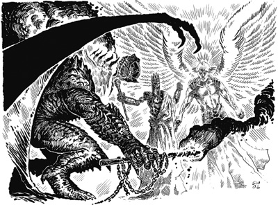

邪恶权能(The Regalia of Evil)
这三件神器拥有强大的力量 ─ 当一起使用时甚至更为强大。在太古，在人类诞生之前，甚至是世界成型之前，一群黑暗而腐败的神o们创造了它们以对抗光明诸神和平衡之主们。自从那时起，” 邪恶权能”神器就被邪恶阵营的精英所使用，以便和具有相似装备的善良及中立阵营的精英抗衡(每个阵营都有其权能神器，如下所述)。也许在今日，这些竞争不再发生，权能神器们也分别落入了凡人手中。偶尔，邪恶诸神们会对这些k们许久以前创造的物品投以关注。距离上一次有某个单一个体同时使用这三样”邪恶权能”神器已有数千年之久了。
邪恶冠冕：(The Crown of Evil)
这个钢铁王冠十分的粗糙且简陋，但看起来宛如环绕在穿戴者的头上的黑色火焰。当邪恶生物戴上王冠时，其头部确实会被红黑色的火焰围绕。这个火焰将会隐藏戴冠者的面貌。戴冠者对火焰免疫，力量获得 +4 的增强加值，防御等级获得 +4 的卸劲加值以及20点的法术抗力。他可以任意的使用凝视令75漳诘亩允址路鸺到所喜爱或憎恶者的面貌，这将造成该对手在任何的攻击检定上皆承受 C1 的士气减值，持续20轮(DC 15之意志豁免检定，过则无效，法术抗力可起作用)。他可以使用”唤起死灵”(create undead)、”火墙术”(wall of fire)以及爆发一个直径5盏牡赜之炎(hellfire)，造成3d6点的伤害(无豁免检定，法术抗力可起作用)，以上能力每天可分别使用三次。这些特殊的恶魔之炎并非真正的火，所以火焰抗力无法提供保护。这些法术与类似能力的施法者等级为20级。戴此冠者讲话时只能说谎(大多数穿戴者选择完全不说话)。
邪恶权杖：(The Scepter of Evil)
这柄权杖是由钢铁铸成，饰有铁链。其中一端永远亮着不发热的暗红色火焰。当被邪恶角色持有时，它可给予魅力 +4的增强加值。持有者可施展以下能力每天各三次：”恐惧术”(fear)(DC 19)、一个特殊的腐败火球，一半是火焰伤害，一半是邪恶伤害(DC 18)、”疫病术”(contagion)(DC 18)和弱能术(enervation)(DC 19)。这些法术的施法者等级为20级。此物品的持有者将会变得越来越自我中心。
邪恶法珠：(The Orb of Evil)
这个直径6嫉那蛱迨怯缮⒉及己鄣母痔所造。最轻微地碰触便会使表面产生红色的火花。邪恶持有者可以如同15牧师般斥喝或命令不死生物。当被邪恶角色持有时，它可以提供智能 +4 的增强加值。此外，法珠可以用来吸收法术，如同吸收法力权杖。此物品的持有者会变得越来越贪婪。
若某个生物持有超过一个的”邪恶权能”神器，它们会产生更强大的力量，称之为共鸣效应。
共鸣效应(两件物品)：
若某个生物持有两件”邪恶权能”神器，他在对邪恶生物进行交涉及威吓检定时会获得 +2 的环境加值，如同他们将角色视为强大的邪恶眷宠者。没有心智的不死生物会将角色视为不死生物之一，且由于角色与不死生物的相似性，使得他在对影响心灵效应、毒素、睡眠、麻痹、震慑和疾病进行豁免检定时，获得 +1 的环境加值。此外，虫类生物会对角色抱持高度尊重，一次成功的魅力检定(DC 20)可令虫类生物于24小时内不对角色进行攻击。最后，所有该生物施展的邪恶型法术(包括用”邪恶权能”神器施放的)之豁免检定难度均 +2。
共鸣效应(三件物品)：
当某个生无持有全部共三件的”邪恶权能”神器时，他的体质、敏捷和智力会获得 +4 的增强加值。所有该角色以武器造成的伤害均附有邪恶本质，因此只能在有”崇敬术”(consecrate)或”圣居”(hallow)法术的区域以魔法进行治疗。
非邪恶角色：
若非邪恶角色试图使用这些物品时会立刻受到5d6点的伤害。此外，若善良角色试图使用这些物品，必须进行意志豁免检定(DC 18)，否则会失去2000点的经验值。
善良权能(The Regalia of Good)
这三件强力的神器组成了”善良权能”，它们的铸造时间与”邪恶权能”相同，目的是用来让善良精英们与配有类似装备，归属于邪恶或中立神o的精英们相对抗。长久以来，善良诸神们让某个神o保管它们，但却被偷走、分开，如今已失落了。
善良冠冕：(The Crown of Good)
这个由旋扭的密银所造的薄王冠，优雅而细致，看起来宛如环绕穿戴者头部的光芒。当善良角色戴上王冠时，他的头部确实会被一圈明亮的光晕所围绕。戴冠者对电击免疫，智能获得 +4 的增强加值，防御等级获得 +4 的卸劲加值以及20点的法术抗力。他可以任意的使用”神导术”。他可以使用以下能力每天各三次：”英雄宴”(heroes’ feast)、”短讯术”(sending)和”观照术”(status)。每天一次，他可让自己被”法术无效结界”(globe of invulnerability)围绕。这些法术的施法者等级为20级。戴此冠者无法说出任何谎言。
善良权杖 ：(The Scepter of Good)
这柄精致的权杖是由密银所制，环绕着叶型镶饰。一端总是亮着无热度，等同于火炬的轻柔白光。当被善良角色持有时，它可以提供魅力 +4 的增强加值，且免疫心智影响法术和效应。持有者可以用其命令他人，如同没有使用限制的支配权杖，且可以施展”圣光击”(holy smite)(DC 19)、”灼热光辉”(searing light)(DC 18)每天各三次。这些法术的施法者等级为20级。权杖持有者几乎无法拒绝他人的请求帮助，不论事情是多么地绝望。
善良法珠：(The Orb of Good)
这个直径6嫉那蛱迨怯勺畲烤坏乃晶制成，置于由闪亮的密银制月桂叶构成的金属笼。善良持有者可以如同15级牧师般驱散或摧毁不死生物。当被善良角色持有时，它可以提供智力 +4 的增强加值。此外，法珠可以被当成水晶球用来探知，还额外附有”侦测思想”能力。每天一次，法珠可用触碰方式施展”医疗术”(heal)(如同20级牧师)。
共鸣效应(两件物品)：
当某个生物持有两件”善良权能”神器时，他在对善良生物进行交涉检定时可获得 +2 的环境加值，如同他们将角色视为强大的善良奉献者。角色的天性本质能反映出围绕神器的天界能量，所以他在对电击、石化、寒冷、强酸、火焰、毒素进行豁免检定时有 +1 的环境加值。角色得到60盏幕璋凳泳跫昂诎凳泳酢Ｈ舫钟姓呤┱埂币旖缡拿恕(planar ally)(包括次级与高等版本)以召唤天界生物时，该生物只会要求平时代价的一半，以物品或服务方式(由DM决定)。最后，持有者施展的所有善良型法术 (包括用”善良权能”神器施放的)之豁免检定难度均 +2。
共鸣效应(三件物品)：
当某个生物持有全部共三件的”善良权能”神器时，他的力量、敏捷和体质都获得 +4 的增强加值。所有该角色持有的武器都成为神圣武器，对邪恶生物造成额外1d6点的伤害。此外，持有者会放出勇气圣光，所有在30漳诘拿擞言诙钥志逍в进行豁免检定时都会获得 +4 的士气加值。
非善良角色：
当非善良角色试图使用这些物品时会立刻受到5d6点的伤害。若邪恶角色试图使用这些物品，必须进行意志豁免检定(DC 18)，否则会失去2000点的经验值。
中立权能(The Regalia of Neutrality)
目前还不清楚究竟是中立神o创造”中立权能”神器，以便让中立阵营精英和配有相似装备的其它阵营精英主动竞争，还是指派精英去解决这场竞争。不论原因为何，这些物品都同等地古老且强大。这些物品目前的所在地未知 ─ 可能由某位中立神o负责保管它们，或是如同k们曾经做过的，轮流护卫这些物品。但它们也有可能已经遗失或被偷了。
中立冠冕 ：(The Crown of Neutrality)
与善良或邪恶的相似神器比起来，这个黄金王冠外观相当传统，是一顶有九个尖突的宽金属环，每个尖突顶端都镶有不同颜色的宝石。戴冠者对强酸及寒冷免疫，智力获得 +4 的增强加值，防御等级获得 +4 的卸劲加值以及20点的法术抗力。她能够自动区分出她所听到或读到的为真话、半真话或谎言。她可以使用以下能力每天各三次：”指使术” (geas/quest)、”侦测思想”(detect thoughts)(DC 17)、”欧提路克魔封法球”(Otiluke’s resilient sphere)(DC 19)。这些法术的施法者等级为20级。为了保持公平，戴此冠者会揭示所有她察觉到的虚假，包括她自己所说的。
中立权杖 ：(The Scepter of Neutrality)
这柄华丽的黄金权杖，如同那顶王冠，看起来很像世俗间的皇室权杖；沉重的杖身，顶端有大型球体，镶有宝石。当被中立角色持有时，它可对体质提供 +4 的增强加值。持有者可以得到2点的快速医疗，每轮医疗2点生命值值到她被杀死或不再持有权杖。持有者可以使用以下能力每天各三次：”巧言术” (tongues)(DC 20)、”咆哮术”(shout)(DC 19)、”高等命令术”(greater command)(DC 20)。这些法术的施法者等级为20级。权杖持有者会被驱使去找出冲突的解决方法(虽然不一定要是和平的方法，举例来说，被怪物们伏击时)。
中立法珠：(The Orb of Neutrality)
这个直径6嫉那蛱迨怯苫平鹚制，顶端有着宝石镶饰的圆球。被中立角色持有时，它可对魅力提供 +4 的增强加值。此外，法珠允许持有者同时看见所有的方向，如同穿著百眼法袍，但她本身外观并无变化。她得到120盏暮诎凳泳酰且可以看见120漳诘囊形或灵体生物。在进行搜索或侦查检定时，她可以得到 +15 的环境加值。在迟滞状态时，她依然保有用于防御等级的敏捷加值，而且不会被夹击。不像百眼法袍，在碰到会凝视攻击的生物时，法珠允许持有者移开或闭上她的眼睛，而且也不会因魔法性光线而目盲。
共鸣效应(两件物品)：
当某个生物持有两件”中立权能”神器，在对中立(非善也非恶)生物进行交涉检定时有 +2 的环境加值，如同他们将角色视为强大的中立服侍者。角色会逐渐变得类似机元异界的结构型居民，在对心智影响效应、毒素、睡眠、麻痹、震慑、疾病、死亡效应和死灵效应进行豁免检定时有 +1 环境加值。动物(包括凶暴动物，但不包括兽类)会对角色抱持高度敬意，一次成功的魅力检定可以可令动物于24小时内不对角色进行攻击。所有该生物施展的守序及混乱型法术(包括用”中立权能”神器施放的)之豁免检定难度均 +2。
共鸣效应(三件物品)：
当某个生物持有全部共三件的”中立权能”神器时，她的力量、敏捷和智能都获得 +4 的增强加值。任何她持有的武器都被视为追击武器，可让她每轮以最高加值进行一次额外攻击。
善良和邪恶角色：
当善良或邪恶角色试图使用这些物品时会立刻受到5d6点的伤害，且必须进行意志豁免检定(DC 18)，否则会失去2000点的经验值。